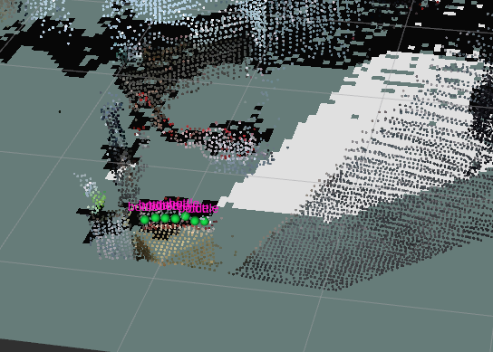
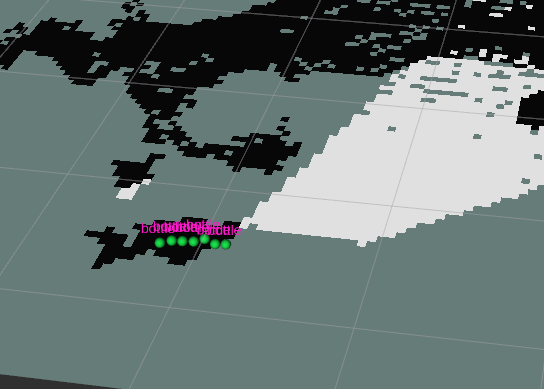

你好，我是唐天彪
我主要围绕机器人感知与自主导航开展研究和工程实践，关注机器人如何理解环境、规划路径并稳定行动。
我的实践涵盖 SLAM 与导航、运动控制接口和仿真平台开发，串联传感器、建图定位、路径规划与运控，在四足机器人和双足机器人仿真与真机中进行系统联调与验证。

Agibot D1 室内外导航

人形双臂 CAN 控制

THEMIS 仿真导航
RTAB-Map 增量语义地图
RESEARCH
ParLS-GIS
广义独立集并行局部搜索算法
面向广义独立集问题，设计并实现结合 k-shell 初始化、两步前瞻与多线程协同的并行局部搜索算法，在 278 个基准实例上完成评测。学生第一作者，独立完成算法设计、实现、实验与论文撰写，论文在投 AAAI 2027。
 parls-gis-cover.jpg
parls-gis-cover.jpg
 01_1.png
01_1.png
 01_2.png
01_2.png
 01_3.png
01_3.png
 01_4.png
01_4.png
ROBOT NAVIGATION
Agibot D1
四足机器人室内外 SLAM 与导航
独立搭建基于 Mid360、FAST-LIO2 与 Nav2 的四足机器人室内导航系统，完成感知、建图定位、路径规划及 SDK 控制桥接，在约 20 m × 20 m 室内场地完成真机建图与静态障碍绕行；另参与 GNSS 与 Mid360 的室外建图导航联调。
 02_1.jpg
02_1.jpg
ROBOT HARDWARE & CONTROL
双臂 CAN 控制
人形机器人双臂通信与轨迹回放
独立完成双臂线束连接、USB-CAN 通信与关节位置控制，开发轨迹解析和回放工具，将关节位置序列转换为电机控制报文，并在真实机器人双臂上完成轨迹录制与回放验证。
 03_2.png
03_2.png
ROBOT SIMULATION
THEMIS 仿真导航
双足机器人建图导航集成与方案评测
在 Gazebo 中集成 THEMIS 双足机器人的 RGB-D 建图定位与 Nav2 导航，联调步态控制、里程计和 TF，并针对地面与自体误检调试障碍感知。开展规划控制方案及 NetVLAD / BoW 地点识别对比。
SEMANTIC MAPPING
RTAB-Map
随 SLAM 图优化更新的增量语义对象地图
独立开发 RTAB-Map 语义对象地图扩展，将 RGB-D 检测组织为具有稳定 ID 和多视点观测的地图对象，通过图节点锚定随 SLAM 优化更新对象位置，并在 ZED 2i 真机上验证对象关联、地图保存与恢复。
 rtabmap-semantic-map-01.png
rtabmap-semantic-map-01.png
 rtabmap-semantic-map-02.png
rtabmap-semantic-map-02.png

7_bottle_3D.png
7_bottle_2D.pngROBOT SIMULATION PLATFORM
Qt 仿真平台
多机器人建图与导航控制台
独立开发面向差速小车与 THEMIS 双足机器人的 Qt / ROS 2 仿真控制台，将 RViz 与 Gazebo 原生视图嵌入统一界面，串联算法配置、建图、定位与导航，并以命名地图库支持地图保存、续建、复用和导入导出。
SIM-TO-SIM
THEMIS · MuJoCo
Gazebo → MuJoCo 的 Sim-to-Sim 全链路迁移
将 THEMIS 双足机器人的运控、建图定位与自主导航从 Gazebo 迁移至 MuJoCo。完成模型转换、接触动力学及传感器适配，复用原状态估计、步态与全身控制，贯通物理反馈、RGB-D 感知和 Nav2 导航，完成行走建图、地图重载定位与绕障导航验证。
ZED YOLO
ZED 多模型视觉平台
Jetson 上的实时推理与 Web 展示
独立开发 Jetson + ZED 2i 视觉调试平台，适配目标检测、实例分割与单目深度 ONNX 模型，接入 TensorRT 推理，并通过 ROS 2 与 Web 界面实现模型热切换、参数调节和识别结果展示，完成 ZED 真机验证。
 支持模型.png
支持模型.png
 ZED识别.png
ZED识别.png
 yolo26m模型识别.png
yolo26m模型识别.png
 yolo26m-seg模型识别.png
yolo26m-seg模型识别.png
 yolo26m-depth模型识别.png
yolo26m-depth模型识别.png
AI LEARNING APP
拾贝
支持离线练习与跨端同步的 AI 学习应用
主导移动端学习与模拟面试应用的产品流程和跨端协议设计，通过 AI 协作完成实现。串联电脑端内容导出、手机增量同步与缓存后离线练习，并支持手机端 AI 生成和内容回传。
 shibei-app-cover.jpg
shibei-app-cover.jpg
 05_2.png
05_2.png
 05_3.png
05_3.png
 05_4.png
05_4.png
 05_5.png
05_5.png
 05_6.png
05_6.png
AI CAREER WORKSPACE
JobPilot
本地优先的 AI 求职工作台
主导求职工作台的需求、架构与交互设计，通过 AI 协作完成实现。将简历解析、岗位匹配、投递跟进和项目面试准备连接起来，围绕同一岗位持续保存分析结果与求职进度。
 06_1.png
06_1.png
 06_2.png
06_2.png
 06_3.png
06_3.png
 06_4.png
06_4.png
 06_5.png
06_5.png
 06_6.png
06_6.png
AI AGENT
Chat Code Agent
集成工具调用与项目上下文的代码协作工作台
主导本地代码协作工作台的架构与交互设计，通过 AI 协作完成实现。将流式对话、项目文件、代码编辑与终端整合到同一工作区，支持模型多轮调用工具，并通过本地知识检索、Skills、MCP 和定时任务扩展能力。
 07_1.png
07_1.png
 07_2.png
07_2.png
 07_3.png
07_3.png
 07_4.png
07_4.png
 07_5.png
07_5.png
 07_6.png
07_6.png
 07_7.png
07_7.png
还有更多实验、代码与思考
···